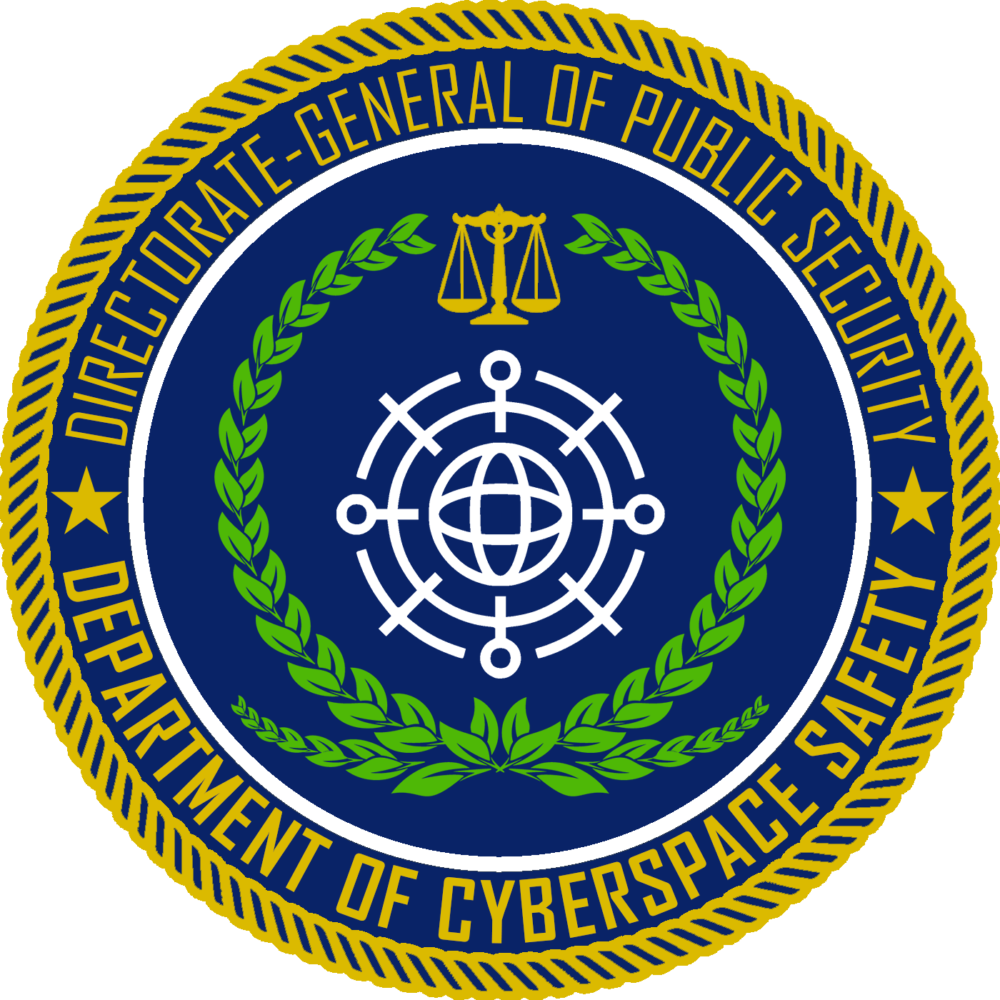
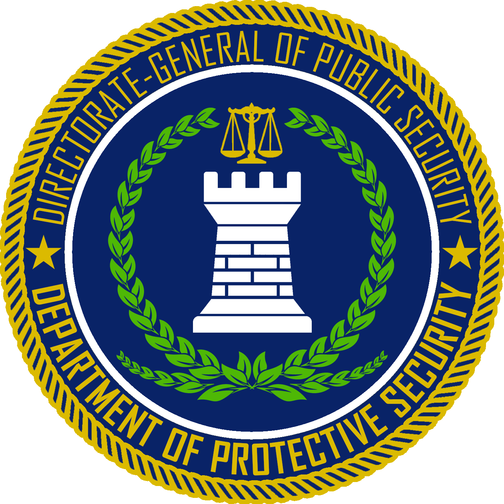

The National Police Units
There are 6 national police units in Imperial Royal Union, with jurisdictional authority across the entire nation. They form the highest-level of specialised law enforcement, with powers equivalent to that of federal institutions in nations with federal governments. Each department is headed by a Director and a Deputy Director, with a number of Assistant Directors assisting in the running of operations in the department.
DCC
Department of Cyberspace Safety
SSA
Department of Protective Security
AGNES
National Investigations Agency
Border Protection Department (SPF)
Service de protection des frontières | Gränsbeskyddningsavdelningen
The Border Protection Department is responsible for the enforcement of immigration law and maintaining of border integrity. Stationed at border checkpoints as well as immigration clearance facilities at airports and seaports, the Department regulates the flow of immigration. It is also responsible for the issuance of passports, although visa and citizenship affairs are dealt with by the National Migration Agency and the Citizenship & Naturalisation Office.
- Director, SPF | DC Theodore Strauss (Mr.)
- Deputy Director, SPF | SAC Simon Pole (Mr.)
- Assistant Director, Border Control | AC Leslie Quinn (Mr.)
- Assistant Director, Citizenship Services | AC Patricia Neuwirth (Ms.)
- Assistant Director, Investigations | AC Michael Perrick (Mr.)
Correctional Reform Department (FGSA)
Département des prisons | Fängelser avdelning
The Correctional Reform Department is in charge of corrections in Imperial Royal Union, which includes the management and operation of correctional facilities such as the prisons and rehabilitation centres. It also provides uniformed security for the courthouses of the Supreme Court of Judicature alongside the territorial police units and is also responsible for the transport of persons under custody of the State.
- Director, FGSA | DC Glenn Everton (Mr.)
- Deputy Director, FGSA | SAC Lorinne Bernhard (Ms.)
- Assistant Director, Operations | AC Aden Cross (Mr.)
- Assistant Director, Management & Policy | AC Carol White (Ms.)
- Assistant Director, Correctional Support | AC Rayner Goran (Mr.)
- Assistant Director, Parole & Review | AC Sergey Kirkorov (Mr.)
Customs & Excise Agency (PSA)
Agence de douane et d'accise | Punktskatteavdelningen
The Customs & Excise Agency is responsible for the collection of import tariffs, duties and customs excise, as well as the enforcement against prohibited, restricted or duty-unpaid goods in Imperial Royal Union. It maintains a presence alongside the Border Protection Department at Imperial Royal Union's points of entry, and also works closely with the Public Revenue Administration in the revision and submission of customs excise.
- Director, PSA | DC Juno Basseter (Ms.)
- Deputy Director, PSA | SAC Sylvester Wrede (Mr.)
- Assistant Director, Operations | AC Gabriel Ingemar Lars (Mr.)
- Assistant Director, Administrative Support | AC Dorothy Jones (Ms.)
- Assistant Director, Policy | AC Remy Gustaf (Mr.)
- Assistant Director, Investigations | AC Edgar Dromon (Mr.)
Department of Cyberspace Safety (DCC)
Département cybercriminalité | Cyberbrottsavdelning
The Department of Cyberspace Safety is responsible for the prevention and intervention against cyber crime and Internet-based crime. Contrary to popular belief, it is not responsible for the enforcing Internet censorship, but for the investigation of crimes perpetuated on the dark web and those of black-hat hackers. Due to the likelihood of transnational Internet crimes, the Department frequently collaborates with police forces outside of Imperial Royal Union to guard against cyber crime.
- Director, DCC | DC Walter Kienmayer (Mr.)
- Deputy Director, DCC | SAC Joanna Christophilou (Ms.)
- Assistant Director, Internal Security | AC Aldo Hunter
- Assistant Director, Investigations | AC Gavyn Campbell
- Assistant Director, Prevention & Outreach | AC Andrew Potts
Department of Protective Security (SSA)
Bureau de sécurité de protection | Skyddande säkerhetsavdelning
The Department of Protective Security is in charge of the safety and protection of key government officials in Imperial Royal Union as well as those of visiting diplomats. As part of its protection duties, the Department also plans the security framework of government offices and provides uniformed security to the offices of HIM Government. In addition, it is also responsible for the witness protection service, which is only available at the request of the prosecutors in the National Justice Administration.
- Director, SSA | DC Susie Blake (Ms.)
- Deputy Director, SSA | SAC Riley Palmer (Mr.)
- Assistant Director, Government Security | AC Jacob Amuary (Mr.)
- Assistant Director, Diplomatic Protection | AC Karina Dillon (Ms.)
- Assistant Director, Personal Protection | AC Evan Wichita (Mr.)
- Assistant Director, Witness Protection | AC Julio Maduro (Mr.)
National Investigations Agency (AGNES)
Agence nationale d'enquêtes | Nationella utredningsbyrån
The National Investigations Agency is in charge of all criminal investigations from serious crimes to financial crimes that span across the borders of the Cantons of Imperial Royal Union. It is also responsible for large-scale investigations that either fall beyond the jurisdictional scope or resource capability and availability of cantonal police units. For counter-terrorism and terror-related crimes, the Agency heads the joint investigation with the subordinate departments of the Directorate-General of State Security.
- Director, AGNES | DC Jean-Marie Gaspard (Mr.)
- Deputy Director, AGNES | SAC Jodi Burke (Ms.)
- Assistant Director, Financial Crimes | AC Kevin Sheri (Mr.)
- Assistant Director, Organised Crimes | AC Austin Kennard (Mr.)
- Assistant Director, Controlled Substances | AC Eugene Aron (Mr.)
- Assistant Director, Violent Crimes | AC Suzanne Sigrid (Ms.)
- Assistant Director, Special Investigations | AC Norman Erland (Mr.)